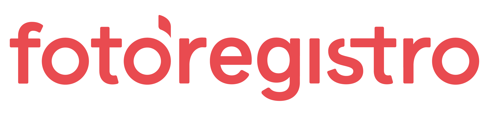

01 / PARCERIA CONFIRMADACOLABORAÇÃO REAL

MARCA PARCEIRA
FotoRegistro
Contexto, entregas e registros serão organizados depois da seleção final das informações, fotos e vídeos.
MARCAS & HISTÓRIAS REAIS
Uma seleção cuidadosa das colaborações confirmadas da Duda. Cada marca será apresentada com contexto, conteúdo produzido e resultados somente quando essas informações estiverem comprovadas.
Três colaborações confirmadas, agora apresentadas com suas identidades visuais.
Os nomes abaixo representam parcerias confirmadas pela Duda. Não atribuímos formato, resultado, depoimento ou campanha sem confirmação específica.

MARCA PARCEIRA
Contexto, entregas e registros serão organizados depois da seleção final das informações, fotos e vídeos.
MARCA PARCEIRA
Contexto, entregas e registros serão organizados depois da seleção final das informações, fotos e vídeos.
MARCA PARCEIRA
Contexto, entregas e registros serão organizados depois da seleção final das informações, fotos e vídeos.
Contexto, criação e prova real.
Descrição curta e verdadeira da colaboração.
Vídeos, fotos e formatos utilizados.
Dados e depoimentos somente quando comprovados.
MARCAS & PROJETOS